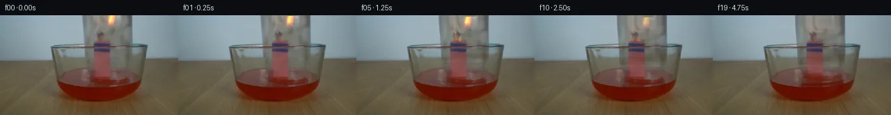

![首帧]()

Round 00
2026-11-05T17:48:49.144936+00:00像素候选变化代码 +283/−0inspection 更新
pixels afbb8d8619f66092 · code 8e3f724baac66189
查看本轮 generate.py 真实 diff
--- previous/generate.py +++ current/generate.py @@ -0,0 +1,283 @@ +"""Photographic pixel continuation using only the supplied first frame. + +No external imagery, learned model, renderer, or simulation engine is used. +All distances are in output pixels, and times are in real seconds. +""" +from pathlib import Path +import json +import numpy as np +from PIL import Image, ImageDraw +from scipy.ndimage import gaussian_filter, map_coordinates +import artifact_io + +ROOT = Path(__file__).resolve().parent +H, W = 144, 256 +Y, X = np.mgrid[:H, :W].astype(np.float64) + + +def smooth(a, b, v): + z = np.clip((v-a)/(b-a), 0, 1) + return z*z*(3-2*z) + + +def warp(a, dy=0., dx=0., mode='nearest'): + if np.ndim(dx) == 0: + dx = np.full((H, W), dx) + if np.ndim(dy) == 0: + dy = np.full((H, W), dy) + return np.stack([map_coordinates(a[..., c], [Y-dy, X-dx], + order=1, mode=mode) + for c in range(3)], axis=-1) + + +def flame_strength(t): + return float(1-smooth(1.8, 3.45, t)) + + +def jar_depth(t): + return float(12*smooth(0., 2.5, t)) + + +def water_rise(t): + return float(6*(1-np.exp(-(max(t-2.9, 0)/1.05)**2))) + + +def prepare_photo(photo): + # Estimate the unobstructed wall behind the jar from nearby same-row pixels. + # Ratios keep the photographed horizon and the matches in fixed positions. + reference = photo.copy() + for y in range(64): + left = np.mean(photo[y, 106:114], axis=0) + right = np.mean(photo[y, 195:203], axis=0) + u = np.clip((np.arange(W)-110)/89, 0, 1) + reference[y] = left[None]*(1-u[:, None])+right[None]*u[:, None] + + transmission = np.ones_like(photo) + ratio = np.clip(photo/(reference+1e-6), .50, 1.20) + # Remove the flame and matches from the moving optical coefficients. + # Their photograph remains in the fixed transmitted scene. + for y in range(64): + if y < 22: + for x in range(151, 175): + u = (x-150)/25 + ratio[y, x] = ratio[y, 150]*(1-u)+ratio[y, 175]*u + if 21 <= y <= 63: + for x in range(132, 165): + u = (x-131)/34 + ratio[y, x] = ratio[y, 131]*(1-u)+ratio[y, 165]*u + # The bowl's horizontal rim is a fixed foreground object. + for y in range(40, 49): + u = (y-39)/10 + ratio[y] = ratio[39]*(1-u)+ratio[49]*u + ratio = gaussian_filter(ratio, (.55, .35, 0)) + + jar_left = 118+.062*np.minimum(Y, 96) + jar_right = 190.5-.004*Y + sides = smooth(jar_left-1.2, jar_left+.8, X)*(1-smooth(jar_right-.7, jar_right+1.4, X)) + ellipse_x = (X-156)/33 + jar_bottom = 88+10*np.sqrt(np.maximum(0, 1-ellipse_x**2)) + body = sides*(1-smooth(jar_bottom-1., jar_bottom+1.2, Y)) + tail = np.mean(ratio[54:61], axis=0) + for y in range(H): + if y < 62: + local = ratio[y] + else: + # The wall's transmitted color must not travel into the tabletop. + # Lower glass has a weaker multiplicative attenuation in this photo. + attenuation = .65*(1-.40*smooth(63, 99, y)) … diff truncated; 196 more lines …